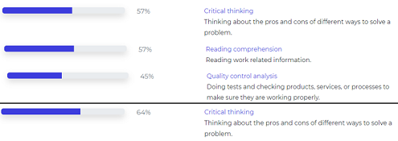
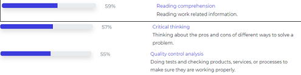
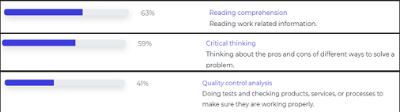
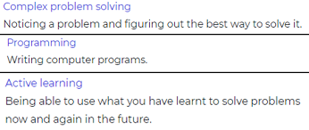

Muhammad’s interest in IT started at a very young age and he has
experience in creating content on the internet, screen capturing gameplay, editing clips and is passionate about producing music.
His interest in IT is driven by his desire to be an innovator and the opportunity to help improve society.
He is currently studying the Introduction to Information Technology at RMIT University.
Muhammad’s family immigrated to Australia when he was 3 years old and he has continued to turn his hobbies of gaming and video creation into his pursuit of a career in IT.
Muhammad brings to Group 12 passion and an attitude for success.
Name: Jacob Pane Student Number: S3897630
Jacob is passionate about IT which started when he was 4 years old
while playing his first video game.
His interests lie in technology “that surrounds our day-to-day lives”, bringing global connection both technically and in human communication.
Cyber-security analytics is a goal that Jacob is pursuing via a pathway toward a Bachelor's Degree in Information Technology.
As with many in the IT industry, one of Jacob’s hobbies is gaming, but he also enjoys working out and listening to podcasts.
Name: Jeremy Jacobs Student Number: S3970974
Jeremy brings to Group 12, sixteen years of experience in the Finance Industry and has a partnership in an IT Consulting Company with a combined 25 years of experience.
“Bridging the Gap between Business and Technology” is Jeremy’s main interest which started while working on his computer in the 1980s.
Some of Jeremy’s achievements include WordPerfect, Lotus 123, Advanced Lotus 123, Advanced Certificate in Xero and Xero Payroll, MYOB, and advanced graphs.
Name: Christopher Lan Student Number: S3980996
Chris’ Interest in IT lies in tech support, network admin, computer
graphics and digital animation. Their first experience in IT was with
their first PC, it had an outdated OS and Chris had to learn how to maintain it.
Being skilled in Adobe Photoshop, Adobe Illustrator, Adobe Indesign and Microsoft Office are attributes that Chris brings to Group 12.
Creative inspiration and artistic ideas often flow while Chris is enjoying long walks, strolling along beaches and forests in the company of Milo (their dog).
Name: Austin Bowen Student Number: S3967671
Austin was born in Australia and was raised on a hobby farm. His
hobbies include singing, farm animals and gaming.
He is currently studying Introduction to Information Technology and Introduction to Programming, and once completed will enrol in the Bachelor of IT.
Austin’s previous experience in IT includes two high school subjects.
Information Technology has such a broad range of uses and offers careers in many areas that allow Austin to learn and upskill continuously.
Personality Test
Name
Myers-Briggs Test
Test 2
Test 3
Muhammad Alif
ISFJ-T
Sentinel
Constant Improvement
Big Five Personality Test:
Openness: 56%
Conscientiousness: 35%
Extraversion: 40%
Agreeableness: 71%
Neuroticism: 79%
Learning Style Test:
Visual Learner
Jacob Pane
ISTP-A
Explorer
Confident Individualism
Big Five Personality Test:
Openness: 50%
Conscientiousness: 56%
Extraversion: 37.5%
Agreeableness: 77%
Neuroticism: 42%
Big Five Personality Test:
Openness: 92%
Conscientiousness: 59%
Extraversion: 5%
Agreeableness: 81%
Neuroticism: 85%
Learning Style Test:
Visual Learner
Austin Bowen
ISTP-T
Explorer
Constant Improvement
Test My Creativity Test:
Creativity: 68.45
Learning Style Test:
Tactile/Kinaesthetic
The Myers-Briggs test that the members of Group 12 participated in individually
gives purpose to the employer in formatting team members into a group.
All members of the team are able to understand the learning style, communication, strengths
and development areas of the other members to ascertain the best and most productive method to
interact with each other allowing the best outcome for a project.
Software Engineer
coding, software design, software analysis,
software QA testing, test plan writing
Programmer: Collaborating with Business Analysts and Developers to produce software designs.
Formulating program specifications and basic prototypes. Transforming software designs and
specifications into high-functioning code in the appropriate language.
ICT (Information & Communications Technologies) Support Administrator:
Assist with the installation,
Operation, management, and maintenance of a business's information and communications technology
systems - including computers, software, and communication and network technologies.
Business Analyst:
The role of a business analyst is an important part of any project team. Acting as the
key interface between the users and the project manager they gather information, document processes,
and confirm the final documents with users.
Cyber Security Analyst:
Assess and report (escalate) all significant events to assigned control owners and
subject matter experts (SMEs) for action and mitigation.
Demonstrate control efficiency to the Department of Internal Control through the support of all
Operational Effectiveness Testing conducted by Internal Audit and third-party auditors.
Software Engineer:
The business environment relies heavily on software for many functions - from automated traffic
control systems to complex manufacturing processes - and Software
Engineers are pivotal in the development of software that provides real solutions.
A Software Engineer needs to address the entire software development lifecycle, to analyse
the needs, and then design, test and develop software in order to meet those needs.
What differentiates each position from the others, if anything?
It’s apparent that each position has specialised skills to complement each other in a team.
Some required elements for each position are shared and conducive towards successful project outcomes.
What common elements are there if any?
Common elements are critical thinking, an eye for detail, coding, advanced communication skills, research
skills and software QA testing.
How similar or how different are your career plans across the group?
Clear technology themes are apparent with a combination of research, analysis and technology
administration tasks.
Industry Data
Ideal Job Titles
Jacob Pane – ICT Security Specialist/Cybersecurity Analyst
Christopher Lan – ICT Support Administrator
Jeremy Jacobs – Business Analyst
Muhammad Alif – Software Engineer
Austin Bowen – Developer Programmer
Demand From Employers:
Jobs in the IT industry are for the most part in shortage.
This is because as the world becomes more dependent on technology, employers are looking
for more workers with problem-solving and entrepreneurial skills as well as a combination
of creative and transferrable digital skills. ICT Security Specialist, Software Engineers
and Developer Programmer all report a shortage in the current labour market throughout all
of Australia. These jobs are also predicted to have strong growth in the future which means
the demand for qualified workers in these roles will increase. Project Administrators reported
not having a shortage throughout Australia as a whole, but in New South Wales (NSW) only.
This means the demand for Program or Project Administrators is greater in NSW than it is in
Australia as a whole. This occupation did however report strong future demand. This means that
employers will be on the lookout for professionals certified to perform
Project Administration soon. Currently, there is no shortage of ICT Business Analysts in
Australia. There are shortages within NSW and the Northern Territory (NT). This profession
is predicted to see moderate future demand.
General Skill Set: Reading comprehension – Reading work-related information.
Critical thinking – Thinking about the pros and cons of different ways to solve a problem.
Quality control analysis – Doing tests and checking products, services, or processes to make sure they are working properly.
Our group's general skill set covers reading comprehension, critical thinking,
and quality control assurance. These were chosen as they were the most common occurring
general skills between our selected ideal jobs. In terms of demand, these skills are sought
after for each of our ideal jobs.
For ICT security specialists, 57% of employers looked for employees with
critical thinking skills, 57% also looked for employees with reading comprehension
skills and 45% looked for workers with quality control analysis skills.

For ICT Business Analysts, 64% of employers looked for workers with critical
thinking skills as well as reading comprehension skills. 63% of employers
looked for skills in quality control analysis.
For Software Developers, 59% of employers looked for workers with reading comprehension skills,
and 57% of employers wanted workers with critical thinking skills. 55% of employers looked
for skills in quality control analysis.

For Database and System Administrators, 63% of employers looked for
workers with reading comprehension skills, 59% of employers wanted
workers with critical thinking skills. 41% of employers looked for
skills in quality control analysis.

For Developer Programmers, 59% of employers looked for
workers with reading comprehension skills, 55% of employers wanted
workers with quality control analysis skills. 54% of employers looked
for skills in critical thinking.
Required Skills not within our skill set:
The three most desirable general skills not within our skill
set are Complex Problem Solving, Programming and Active Learning.

IT Specific Skill Set:
SQL – Allows for access and manipulation of databases, Stands for Structured Query Language.
JavaScript – A programming language that is used for website behaviour.
C & C++ - General purpose programming languages.
Opinion on my Ideal Job:
After looking through the burning glass data I have not changed my opinion of my ideal job. I still believe that
being an ICT Security Specialist is something that I wish to pursue. The national shortage of qualified workers
in this profession means that employers may be more willing to train me up to their standards even if I do not
meet their exact requirements. The strong demand growth in the future for IT Security Specialists has given
me more confidence in my ability to find employment in my selected field.
IT Work
*THE IT PROFESSIONAL WISHED TO DISCLOSE THEIR NAME, THEY WILL BE REFERRED TO AS “U.P”*
Background Information:
U.P has been in the IT Industry for 20 years, their career has enabled them to live in
Singapore and the UK, which is where they currently reside.
U.P currently works for Deloitte Digital, a company known for providing audit
and assurance, assurance, tax and legal, consulting, financial advisory, and risk
advisory services. U.P started a computer science degree after high school, but while
doing so got offered a job relating to providing technical support. After moving up the
corporate ladder, U.P moved onto the following roles and positions:
- System Analyst - Software Deployment creating web portals and data integration - Lead Platform Engineering
Process of Securing Interview:
Muhammad Alif was able to secure the interview due to the fact he is a close family friend.
After contacting U.P through Whatsapp, they eventually set up an interview through MS Teams.
Base Questions: 1. Please tell us about your IT work. What exactly do you do?
U.P explains their official title as a Senior Manager of Platform Engineering however
their official role is a consultant for Deloitte Digital. As a consultant, they advise
clients on the best ways they are able to use their IT systems depending on what the need
is and what platforms they want to implement it in. U.P’s main focus is on cloud architecture
and platform engineering. An example of platform engineering is the App store since Apple
created a platform in which users are able to sell their ideas.
Supporting Quotes: U.P: “Okay. So I'm a, um, uh, my official title yeah, is, a senior manager
platform engineering. Um, but I a, my role is, uh, con-consultant. So I am, I'm a
consultant for Deloitte, um, Deloitte Digital. what I do is basically advise clients on,
you know, the best ways that they can effectively use their IT systems.”
2. Please tell us about the industry you work in.
U.P explains that they work in professional services, which is a consulting company.
The company that he works for looks for organisations that need assistance with their
IT systems or help with their computer computing systems. An example of their work is if
all of a company's computer systems are in a data centre and they would also migrate it
into a cloud, U.P’s company is able to do it for them.
Supporting Quotes: U.P: “So I work for a professional service, um, which, which
is basically a consulting company. So the consulting company, what we
usually do is we usually look for organizations that, um, need assistance
with their IT systems or with their computer computing systems.” U.P: “If organizations are going from on-premise systems or, you know,
if they have all of their computer systems in a data centre and they wanna move
that onto the cloud we can do that.”
3. What other kinds of work do you have to do?
U.P explains that the organisation that he works for since he works for professional services,
there is a lot of mentoring to do because it's a performance-driven organisation.
U.P makes sure that the people they work with have the correct skills and that the
teams they work with have the right culture.
Supporting Quotes: U.P: “The organization I work for because it's a professional service, there's,
you know, there's a lot of things in terms of mentoring, and because it's sort of
a performance-driven organization as well. There's, there's a lot of things like,
you know, making sure that all the people that you work with have the correct skills,
um, and then the teams that you work with have the right culture as well.”
4. Who are all the different people you interact with in your work? Please tell us about them.
U.P explains that his day-to-day role would be to interact with clients.
Understanding clients' requirements, and trying solutions for them. He also interacts
with people who are responsible for the delivery, and individuals who
interact with various stakeholders.
Supporting Quotes: U.P: “My day-to-day role would be to, um, to sort of interacting with clients, so
understanding their requirements, try a solution for them. There are also people that I
interact with who are responsible for the delivery. So they do things like interact with
various stakeholders”
5. Please tell us about your interactions with other IT professionals.
As U.P is the lead for a platform engineering team, he would interact with platform engineers,
security engineers and testers. The people he interacts with focus feature-based improvements,
an example would be mapping out tasks, working on it and eventually implementing that feature
onto the platform.
Supporting Quotes: U.P: “So the team that I lead is a platform engineering team.
I would lead a team of you know, um, maybe about two or three platform engineers,
um, maybe two security engineers, um, a couple of testers, that's probably about it.” U.P: “What that means is we do things on feature-based improvements.
So we would, we would map out our tasks for the quarter and what we had to implement
within that quarter.
6. What about your interactions with clients or investors?
U.P explains that he would always have interactions with clients and instead of investors
he would label them as stakeholders. Stakeholders are individuals who would have invested
interest in the project or the systems they are developing. U.P's role is financial service-based,
so an example of his interactions would be developing open banking solutions for a particular financial
service or creating APIs for their existing system.
Supporting Quotes: U.P: “So there's, there's always interactions with clients, not,
I don't think we would call them investors, we would call them sort of stakeholders,
so people who have invested interest in the project or in the systems that we're developing.”
7. What aspects of your work do you spend the most time on? Please tell us about these.
U.P explains that he works mostly on designing and solving various components
or features of the platform he is working on. The team he leads is heavily cloud-based,
so they would have to solve different matters such as getting inside the cloud solution,
how to get customers inside securely and how to interact with systems that are outside of the
environment.
Supporting Quotes: U.P: “It's probably designing and solutions for various components
or features of the platform. Um, so they could be things like you know,
because we're heavily cloud-based, how do we get inside the cloud solution?
How do we get customers inside securely? How do we interact with systems that
are outside of the environment?”
8. Which aspects of your work do you find most challenging?
U.P explains that the most challenging issue is setting customer expectations.
If a customer thinks that something needs to be done, he would determine if it is achievable
or not. U.P would have to make sure that between the client, that's a balance between what
his company is able to do and what the client wants.
Supporting Quotes: U.P: “The challenging bit is when trying to, uh,
I suppose, set customer expectations. So, if there's something that the customer
thinks that they need or, um, would like to see that is probably not achievable.
Trying to make sure that there's a balance between what we can do for the client and what
the client wants. So those things are probably the biggest challenges.”
9. Finally, can you share an example of the work you do that
best captures the essence of the IT industry?
U.P worked on a project called Deloitte Assist that utilised Alexa devices.
The Alexa device would be used in nursing homes as well as hospitals, they would be next
to patients' beds as an alternative to the call button traditionally used. The traditional
call buttons could not determine how critical the situation was for the patient, but with the
use of Alexa, the patient has the ability to speak to the nurse indirectly that relates to their
need or situation. They managed to improve it by optimising the phrases said by the patients, if a
patient mentions a major issue such as chest pains, it would be given a higher priority. This project
shows what technology can do to better existing systems.
Supporting Quotes: U.P: “Okay. So I worked on a project, um, uh, a while ago, um,
called Deloitte Assist. That project was to, um, use, um, Alexa devices. So, you know those,
those Alexa devices, right? We put them into, um, nursing homes, sorry, not nursing, nursing
homes as well as hospitals. So in patients' rooms and in next to patients' beds, the patients
would interact with, um, the nurse, the nurses using the Alexa devices. What you would do is
you would press a call button, right? Um, so that button says to the nurse that this patient
in bed needs you in bed, like 35 or whatever needs you. So the nurse would go off and you know,
go off and see him. But the problem is that the nurses don't know how critical that is, right?
So what we did was we created an Alexa skill to interact with the patients, and we would
then, um, send out notifications to the nurses, and they, we would, they would actually
have a board to say what the patient actually wanted. ”
Bonus Questions:
1. What was the process of achieving the current position you're in?
U.P explains that he has been in the industry for some time.
When he first got into the industry it was good timing for him, he was in
the process of doing his computer science degree although he did not finish it.
The company that hired him did need to have some formal qualifications however U.P explains
that they were desperate for individuals with technical skills and were lenient enough to have
people not have the qualifications needed. U.P explains that at the time of being hired it was a
good time, as individuals who did not necessarily have the qualifications but were self-starters
and were technically capable were offered roles.
Supporting Quotes: U.P: “When I got into the industry, it's sort of good timing I mean,
you did need to have some formal qualifications, but I think they were desperate for
people who had some sort of technical skills, um, that they would, uh, be lenient enough
for people not to have, you know, the qualifications that they need.”
2. As computers and online learning become accessible, do you think future employers
will look for individuals with skills rather than qualifications and education?
U.P absolutely thinks that this will be the case in the future.
As a recruiter who mainly recruits from universities, he focuses on individuals who are self-starters,
and have passion and drive rather than individuals who have just formal education. Individuals who have
more technical skills have more potential since they are willing to roll off their sleeves and get dirty.
Supporting Quotes: U.P: “I think, yeah, absolutely. I think especially that I do a lot of recruiting as well,
for my organization. We do recruit mainly from universities. I think that,
that there is a focus on people who are self-starters, who have passion and drive rather
than people who have just formal education.”
3. RELATING TO QUESTION 9 - What sort of outcome did you hope to come out of this project?
U.P explains that their outcome was mainly to prove that a concept like this would work.
This project was a prototype since Alexa devices are more consumer-based, so
this project would not focus on using it in that way.
Supporting Quotes: U.P: “You know, the project was a prototype.
It was sort of just to prove that something like this could work because
those Alexa devices are sort of more consumer devices, there isn't that sort of
focus on using it in that way.”
4. RELATING TO QUESTION 9 - What were the biggest challenges you faced when
developing this project?
U.P explains that the biggest challenge was the fact was not owned and developed by his company.
This was a challenge due to the fact the project was an Alexa skill, which can publicly be
available to everyone, however, U.P had to make it private to make it secure.
Supporting Quotes: U.P: “The biggest problem was the device itself.
Since it wasn't owned by us, it was actually owned by Amazon. It's a consumer device,
all of the skills that you publish on an Alexa device, uh, are public. So, which means anyone
can get to it. So, um, we had to lock that down to make it private and to make it sort of secure.”
5. RELATING TO QUESTION 9 - What professionals worked on this project?
The professionals that worked on this project consisted of developers,
architects, project managers, product leaders, cloud engineers and also a
registered nurse that helped oversee the project.
Supporting Quotes: U.P: “So we had some developers, obviously, you know, coders.
We had architects, people who would design the whole system from end to end.
We had cloud engineers, we had testers, and we actually had a nurse as well.
We had a lady who was a registered nurse that we worked with all the time.
Um, we would have project managers and product leads basically.
Below is the raw interview recording:
IT Technologies
The purpose of this section of the report is to cover
and discuss four different technologies used regarding the topic of
Information Technology. These different areas have the same common interest,
with it being a subject that is gaining more popularity and notoriety in the
IT field every day as more information and research about these
areas rapidly grows. We have chosen the areas of Cybersecurity, Blockchain and
Cryptocurrencies, Robots and Autonomous Vehicles respectively. Each of these areas
will answer the base questions - on what it does, the likely impact, and how it will
personally affect us - with detailed elaborations in response to each question.
Cybersecurity
Introduction
The invention of the Internet is probably one of the most important
inventions of the 21st Century. In only a few decades, the Internet has
completely re-invented the ways that we consume media and entertainment, search
for information, and communicate with others. With the most recent advent of the digital
smartphone, the capabilities to achieve, learn and distribute reach new heights. As more
business activities have shifted to a more computerlike approach with an increasing number
of computers being used for databases, records, and storing sensitive information, the
obligation to protect these computer systems from being hacked and breached has become
more apparent. [1] In recent years, ‘Cybersecurity’ or ‘Computer Security has been a widely
used term that has spread widely amongst practitioners and politicians alike. Cybersecurity
is the protection of computer systems and information from harm, theft, and unauthorized use.
[2] Computer security has become increasingly important since the 1980s when the proliferation
of personal computers compounded the concern. [3] Malicious computerphiles, also known as hackers,
are individuals with a technical computer, networking, or other skill to gain unauthorised access
to data. In more modern times, many hackers commit various forms of crimes ranging from identity
theft, – in which a hacker gains access to personal information to steal money or gain other
benefits, [4] – vandalism, - the destruction of data by a malicious computer virus better known as
malware – and invasion of privacy. – the act of illegally accessing protected personal data from a
large database -. The potential threat posed by cyberterrorism is an ongoing concern in the digital
era, however, cybersecurity aims to diminish such threats through the development of advanced
security measures and techniques which will help limit possible exposure to these vulnerabilities.
What does it do?
Cybersecurity is best described as the art of protecting hardware, network, and
devices from unauthorized access with the practice of collecting techniques, technologies,
and processes to help ensure the confidentiality and availability of information from
cyber-attacks. [5] [6] Cybersecurity was created with the aim to combat internal or external
cyber threats and disruptions. According to IBM, in 2022 the average cost of an organizational
data breach is 4.35 million USD [7] A 12.7 per cent increase from their 2020 report which
reported an average cost of 3.86 million USD. These numbers are supported by the September 2022
Optus data breach in which an anonymous cyberattack led to the details of 11 million customers
being accessed, alongside 10 thousand customers’ details being leaked on the clear web. [8]
If better measures had been implemented this breach could have been prevented. If a company
the size of Optus can be a victim of a cyber-attack it means that regular consumers and
individuals can also be victims as well, even with a less prominent attack.
A new state-of-the-art breakthrough within cybersecurity is the use of artificial
intelligence having the capability to analyze and prevent cyber-attacks. As cyberattacks
have grown exponentially in complexity and magnitude, more security measures have been
researched and tested to find the next big break in cybersecurity. In response to the
emergence of these unprecedented challenges, the topic of Artificial Intelligence-based
tools has become a driving factor in helping security operations analysts stay ahead of
internal and external threats. [9] Artificial Intelligence refers to the “technologies that
can understand, learn and act based on acquired and derived information.” [10] AI is ideally
suited to solve some of the most complex and difficult issues, and cybersecurity without a
doubt falls within that class.
In the case of using Artificial Intelligence in cybersecurity in present times, there
are many main benefits that can help organizations prevent cyberattacks. AI can be used
to detect cyber-attacks and malicious activities before it enters their system, an example
is a verification system captcha that many organizations have implemented. Using AI for
cybersecurity enables organizations to understand and reuse threat patterns to predict and
identify new threats. Since AI continuously learns, it expands its knowledge to understand
cybersecurity threats by consuming billions of data artifacts. In doing so, it also provides
well-curated risk analysis, reducing the time security analysts take to make critical
decisions. [11] According to a study conducted by Capgemini Research Institute, they
surveyed 850 senior executives in IT Information Security, cybersecurity, and IT
Operations across 10 different countries and close to two-thirds of cybersecurity
executives say that AI lowers the cost to detect and respond to breaches. [12] As networks
become larger and data becomes more complex, AI provides better solutions to growing needs.
Simply put, humans cannot handle the growing complexity of cyber threats, and sooner or
later, the use of AI becomes inevitable.
The possibilities of using Artificial Intelligence can be endless, it
will most likely move from a detective approach to a more autonomous
defence formula in the years to come. AI is revolutionising the way
cybersecurity is being designed as it is slowly being integrated into the field.
In the span of three more years, drastic developments can be made relating to AI in the
cybersecurity field. A possibility of a system that verifies a threat within a network can
be ideal. Protecting networks is crucial for organizations, managing network security includes
identifying legitimate and illegitimate connection requests, which can be a time-consuming
task for cybersecurity officials. AI could assist the system to identify threats by
automatically identifying verification documents that consist of breaches and prevent
organizations from the leakage of sensitive information. [13] Alongside a network detection
system, an AI-supported email monitoring system can be employed to detect any suspicious
activity or content. In some cases, NLP (Natural Language Processing) can be used to identify
different styles of writing and phrases to prevent the threat of phishing. An additional
possibility can be the development of better and more complex protection mechanisms in
real-time, granted that this may take years of research, development and testing however
it is not too farfetched. AI helps lower costs and improve response time and response to
breaches regardless of the forms, modalities, and specific characteristics in which it is used.
The use of machine learning or sophisticated AI algorithms plays a key role in this development.
[14] Machine learning uses statistical techniques that allow computer systems to learn using data
rather than being hard-programmed. While AI is not a quick solution for all cybersecurity matters, they
are incredibly useful for rapidly automating the decision-making process and deducing patterns ranging
from incomplete or modified pieces of data. These algorithms work by consuming real-world data, such as
existing security threats, as well as new research gathered by researchers worldwide. [15] While AI and
machine learning are not risk-free, it is expected that their use will improve over time. The usage of
machine learning and algorithms has already become a piece of technology that developers use to create
the possibility of cybersecurity and AI going hand in hand.
What is the likely impact?
Artificial Intelligence will certainly create a breakthrough within the cybersecurity space.
Cybersecurity professionals will inevitably have to shift their focus onto using AI and machine
learning to create the most secure online environment not only from a business standpoint but
from a more global perspective. Currently, AI and machine learning have already proven to
have a beneficial impact on the ever-changing landscape, helping to automate threat detection,
and providing valuable analytics that assists experts to understand cybercrime and respond
more efficiently and effectively than the software-driven or manual techniques used today.
To understand the potential impact that AI can bring, in 2022 IBM surveyed 1000 executives with
overall responsibility for their organization’s IT and Operational Technology sectors, and more than 64% of respondents
have implemented AI for security capabilities and 29% are evaluating implantation, leaving only 7% of respondents
not considering the use of AI [16] The percentage will eventually grow as more testing and research is completed nonetheless
his proves that Artificial Intelligence is gaining traction and eventually AI will most definitely be a compulsory tool in the cybersecurity industry.
As humans get more overwhelmed with the mass quantities of attacks the benefits of AI
outweigh the risks of manual operation with humans. An average company must deal with
threats daily and must take a multitude of steps to protect the vulnerabilities. The
use of AI when applied to cybersecurity will make it difficult for attacks to occur due
to the fact that AI has the ability to learn and adapt without explicit instructions. As
more development of the tool is made, there will be no surprise if it will be consumerized.
Companies that see AI as being profitable will no doubt try to make AI available to
individuals who are looking for an alternative method to protect themselves.
The use of AI will most likely affect every single person with a device, online connection
or generally, anyone that uses a form of technology. Individuals in this digitalized world
can be rest assured that with the use of AI, the threat of an attack or data breach be much
slimmer than it was before. Different systems and databases will be much more secure as more
experts get familiar with the technology, and more countermeasures will be put in place to protect
confidential information. However, with the use of AI being able to prevent threats posed by cyber
terrorists, it will not mean that criminals will not also use AI to their advantage, it is just
a matter of who can develop a better algorithm that can overcome the other.
While AI’s feature of automation is necessary, its current functionality will
not completely replace and erase the roles of cybersecurity experts. The use of
AI has not been developed thoroughly enough to a point where it can be fully autonomous
without the need for human supervision so the likelihood of replacing professionals in the
industry does not seem to be a possibility any time soon. Moreover, AI used in cybersecurity
can create more openings for jobs as the requirement to use AI grows. Consultants and recruiters
have a substantial demand for AI skills across the industry and with the implementation of AI in
cybersecurity the demand for developers and engineers will increase. In addition to creating
openings, AI will also replace and make current techniques and methods redundant. As developers
find new and more efficient ways to eliminate threats, the traditional ways of cybersecurity
will be replaced.
How will this affect you?
The development and implementation of AI in cybersecurity will affect us all.
In the modern world, breaches of privacy are beginning to become a common occurrence,
it can be unpredictable and can have catastrophic consequences. In our day-to-day life,
we use some form of technology. Most individuals in Australia use a computerized system
in their life, we use it to exchange information, communicate and store private information.
Even items like door locks, furniture and security features are now technology based. If a
cyber-attack on one of those sectors happens, we could be forced to deal with the consequences.
The use of AI could help prevent all those consequences from happening, it will provide comfort
for us as we can be assured that our information is secured and encrypted without any worry.
AI will change the daunting feeling of placing sensitive information in the wrong hands.
To elaborate, AI will put a bigger barricade towards the protection of our data, as it is
everchanging and evolving. Our family and friends will also be directly affected when AI is
applied to cybersecurity. As stated before, most individuals use a computer-based system to
communicate, bank and do things in their everyday routine. This new technology will help protect
our loved ones from having to deal with the consequences of a cyber-attack. AI improves the overall
structure of cybersecurity, from what was once manually operated will slowly become autonomous.
Our society will change, be in better hands and the world will have a more secure online space.
Conclusion
The introduction of cybersecurity has revolutionised the way
that we protect confidential information. What was once a new
form of technology designed to protect us online from criminal or
unauthorized use is now a necessity in the modern world. The breakthrough
of AI and machine learning in cybersecurity will change the industry. The benefits
of being able to detect threats faster than a regular human, better response time
towards an attack and being able to learn, analyze and provide crucial data to assist
experts without any instructions will forever change the way cybersecurity works.
Blockchain and Cryptocurrency
Introduction
The concept of currency has been around as early as 1200 BCE.
The earliest forms of currency were objects created by nature, an
example would be a cowrie shell, the shell of a mollusc that was widely
available in the shallow waters of the Pacific and Indian Oceans.
As the use of the cowrie shell was popularized and used by different societies
throughout parts of Africa and Asia, the first Bronze and Copper imitations were
manufactured by China around the year 1000 BCE, this could be considered the earliest
form of the metal coin. Outside of China the first-rounded coins were developed from
lumps of silver and were stamped with various gods and emperors to mark their authenticity.
These coins first appeared in the Kingdom of Lydia (modern-day Turkey) and were quickly
replicated and used by the surrounding Greek, Persian, Macedonian and Roman Empires.
[17] As different forms of currency were used throughout history it was not until the
first paper currency was manufactured in China in the 10th Century. The innovation was not
money in its traditional use; however, it was used as a form of agreement – a promise to pay
in specific amounts of gold and silver – which later was a key in the development of banks.
By the 18th and 19th Centuries the use of paper money spread across the globe, the first universal
credit card was introduced in 1950 and then came along credit cards with a magnetic strip
that was used to contain account information. By the 1990s, credit cards began to have chips
embedded inside to encrypt their information, leading to better security. Eventually, the company
American Express – the originator of the plastic credit card – allowed consumers to carry a
balance, and others began to follow shortly after [18] The introduction of first digital
currency was created in 2009 by an anonymous computer programmer or group of programmers
known as Satoshi Nakamoto. Very little is known about the identity/identities of
Nakamoto, however, alongside the creation of the first digital currency, he also
created a digital ledger system called Blockchain. Blockchain was adopted to solve
an issue within cryptocurrency, cryptocurrency could be duplicated, this was known as
“double spending”. Nakamoto solved the issue by creating a blockchain, and along with it
had the ability to issue currency, record transactions and keep an anonymous traceable
record across a decentralized peer-to-peer network. [19]
What does it do?
A blockchain is a form of open distributed ledger technology that can
record transactions made between two parties. Blockchain holds several
unique attributes, the many attributes it holds are decentralization, permanency,
transparency, and security. Amazon Web Service (AWS) states, in blockchain its
decentralization refers to “the transfer of control and decision making from a
centralized entity to a distributed network” [20] To put it in short, blockchain
is not governed by any individual, group, or government. Blockchain has an immutable
database, which means that you are not able to modify any data that is already recorded
inside a blockchain meaning that it is also protected from any cyber-attacks. The transparency
of blockchain refers to the fact that it is fully auditable and entirely traceable. Blockchain
holds a completely accurate record of transactions which allows it to be easily maintained. [21]
Cryptocurrency is a digital currency that enables parties to make direct
payments to one another using a distributed ledger technology called blockchain
that enables a secure transaction. Cryptocurrencies are generated through a process
called mining, a process that involves computational power solving a complicated mathematical
problem to generate one coin. Cryptocurrencies have no real intrinsic value, meaning they are
worth what others are willing to pay for them on the market. Similarly to blockchain technology,
cryptocurrencies are decentralized, they are not overseen by any higher authority. Centralized
cryptocurrency exchanges are more susceptible to data breaches and cyber-attack than decentralized
exchanges. There are many different types of cryptocurrencies, some of the most notable are Bitcoin,
Ethereum and Tether, each holding its own respective market price and market cap [22] The purpose
of cryptocurrency is to be used as an alternative payment method. In addition, cryptocurrency can
also be used as an asset to store wealth, a hedge against inflation and a method of buying real estate.
What is the state of the art of this new technology?
The state-of-the-art development relating to blockchain and cryptocurrency
is the concept of Web 3.0. Web 1.0 is the first iteration of the world wide web,
created by British scientist Tim Berners-Lee, it lasted from 1989 to roughly 2005.
Web 1.0 is referred to as the “read-only” web, only static information that was published
could be searched and read, and there was very little way for user interactions and
user-generated content. Examples of Web 1.0 are basic HTML Pages, forums, and email. [23]
Web 2.0 is the second iteration of the world wide web, which is described as the
current state of the Internet. Web 2.0 are communal web pages that allow visitors to
modify their information. Web 2.0 turned static web pages into dynamic or user-generated
content, the best examples of Web 2.0 are social media sites such as Facebook and Myspace,
video sharing sites such as YouTube and Vimeo and other hosted web services such as Google
Maps [24] Web 3.0 is the third iteration of the world wide web; Web 3.0 uses
decentralization as its foundation and is built on an open, decentralized blockchain
network. The reason Web 3.0 is decentralized is to prevent a few companies from controlling
the internet. Web 3.0 is generally a decentralized web where apps, online services and
finance no longer need authority.
What is likely to be able to be done soon (say in the next 3 years)?
As of 2022, Web 3.0 is still currently in development, however, is seeing
rapid growth in development due to significant funding from venture capitalists.
Many challenges about Web 3.0 have been raised recently, due to the current circumstances,
not everyone is familiar with the concept of blockchain and a decentralized web. Centralized
platforms such as Facebook, Twitter and Instagram have already been embedded in society,
meaning most users will unlikely switch currently. Another issue raised is the compatibility
of Web 3.0 and Web 2.0, the Internet has billions of pages that contain billions of pieces of
data, and a system that will be able to read and understand the functionality of the data will
have to be developed thoroughly. [25]
What technological or other developments make this possible?
Web 3.0 will be released in the near future and unlike its predecessors,
Web 3.0 will have a variety of new functions and features that will make it unique.
Since it is built upon blockchain and crypto-economic systems, it will not only be a way to
manage data, but also a way to redistribute ownership. The feature of decentralization will
allow new concepts of decentralized applications to be available, decentralized finances, games,
and digital infrastructure will all be new additions to the world wide web [26] In Web 3.0,
computer systems will be able to understand and process information similarly to humans, with the
use of Artificial Intelligence and machine learning, Web 3.0 will use data and algorithms to imitate
how humans learn and think. The goal of using AI is for computers to enable faster and more relevant
results thus developing greater intelligence and nurturing consumer satisfaction.
What is the likely impact?
As stated beforehand AI, machine learning and blockchain
will all be key technologies in making Web 3.0 possible.
AI and Machine Learning are the defining features of Web 3.0. with the
ability to learn and provide crucial analysis and data, it will create more
customized and better generally purposed algorithms. Blockchain’s key feature
is its decentralized and transparent nature. As the goal of building an AI-driven,
decentralized web, with the use of blockchain immutable logs and identity-based
authentication will almost guarantee user anonymity, it will pave the way for how
individuals and organizations set new rules and exchange assets. In Web 3.0, blockchains
will be a replacement in how users access content, store and manage data, rather than the
traditional centralized databases and applications. [27] [28]
What is the potential impact of this development?
Web 3.0 will be a transparent network where individuals
are able to interact without the fear of security and privacy.
Web 3.0 will have a high processing capacity due to its trust and high adaptability.
The use of AI Web 3.0 offers a more personalized browsing experience. An AI-generated
algorithm will cause websites to be automatically adapted to our device, evaluate data more
quickly and offer it to users more swiftly. Eventually, as the public using Web 2.0 get familiar
with Web 3.0, they will soon turn to it the as can see and reap the benefits.
What is likely to change?
The possibilities of Web 3.0 are endless, new ideas and
suggestions get brought up and discussed daily. An example of
the potential that Web 3.0 has, is the ability to provide greater user
utility. If you are making plans for a vacation and are on a budget, you
would have to search the world wide web comparing prices and expenses. With the
use of the Web 3.0 algorithm and AI-powered network, It will be able to collect all
this information and generate the correct recommendations suited to your needs. Furthermore,
users can have the potential to create content while owning, controlling, and monetizing them
with the use of the blockchain and cryptocurrencies, these are called NFTs. NFTS stand
for “Non-Fungible Tokens”. NFTs are virtual assets, they can be classified as art,
collectibles, and even virtual games. NFTs enable ownership of unique assets that
are authenticated and traceable through the blockchain, in addition, NFTs can be exchanged
for goods and services in the real world and online through virtual markets. [29]
Which people will be most affected and how?
Whether we like it or not, the launch of Web 3.0 will affect everyone.
The launch of Web 3.0 will have a variety of different concepts demands and
changes that will affect every single person that uses technology, similarly to
how the Internet has revolutionized the world. The way we control our privacy,
manage our data, and view material will all be decentralized, every person that
uses Web 3.0 will be ensured that their data, assets, and privacy belongs to them only.
Will this create, replace, or make any current jobs or technologies redundant?
Web 3.0 will most likely create demand for jobs relating to Web 3.0 development.
The role of standard programmers will evolve from having to create and deploy
applications that rely on a server and more so evolve to creating applications
that are designed to run on the blockchain and related decentralized peer-to-peer
networks. Demand for AI developers will rise too, as Web 3.0 core functionality is
the use of AI and machine learning to power its algorithms, an increase of AI developers
seem to be a likely outcome from the launch of Web 3.0 [30] Web 3.0 will also make old
technologies redundant. Recommendations from centralized applications that collect your data
will be irrelevant. The breach of privacy that companies can collect data without your
permission to boost ads and recommendations will no longer happen.
How will this affect you?
Web 3.0 will be a new chapter of technology for me.
There will most likely be a learning curve, but I am confident
that I’ll be able to quickly adapt and use it to its potential.
In your daily life, how will this affect you?
Web 3.0 will be an application that I would most likely use daily,
as an avid user of Web 2.0, the optimisations that Web 3.0 will bring
will also have the possibility to affect me in real life. The use of blockchains
intrigues me, the idea of being able to own, monetize and distribute all at once
are all separate factors that make Web 3.0 interesting. The AI algorithm will most
likely have a positive effect on my mental health, my interests and demands will all
be recommended to me while using Web 3.0. The negative materials will all be blocked
and prevented from my view with the Algorithm.
What will be different for you?
Web 3.0 will change the ways I manage and control my data and privacy,
consume media and content, and do my daily necessitates. I can be rest assured
knowing that I am safe from any invasion of privacy and cyber attacks that usually
are a daily occurrence within a centralized network. I will most likely pursue a
passion in Web 3.0 development as there are countless ideas and
concepts that need to be brought to life.
How might this affect members of your family or your friends?
My loved ones will also be affected as well,
the ways they are able to use the blockchain to
have the potential to build a career, store their
wealth and be protected from any discrepancies will all
be positive effects of Web 3.0.
Conclusion
Web 3.0 will be the next iteration of the world
wide web that we all love and use today. The rapid
development funded by the biggest venture capitalists
in the world will revolutionise the internet in the same
way as its creation. The use of cryptocurrencies, blockchain
and AI will all be unique factors that differentiate it from
anything we have seen before. Instead of being a part of a
centralised network where negative aspects and outcomes occur
daily, the decentralised network of Web 3.0 will cause all users
to be able to safely manage their data and privacy without the
fear of attacks, alongside the option to be able to own, monetize
and distribute their own assets. The launch of Web 3.0 will be a
revolutionary step for technology, it will just
be a matter of time.
Robots
What does it do?
A robot is an autonomous machine designed to do a certain activity or set of tasks.
This means that once it has been programmed to perform a task, it can execute it autonomously.
There are numerous sorts of robots, but industrial robots, service robots, and domestic robots
are among the most common. In production and assembly lines, industrial robots are often used
to do repetitive operations, such as welding or painting. Vacuum cleaners and lawnmowers are
examples of service robots that are designed to aid people. Domestic robots are gaining
popularity since they are designed to handle activities around the house, such as cleaning
and providing security. Robotics is a multidisciplinary field that integrates engineering,
computer science, and physics to create robots. The study of robotics
enables the development of robots that are more efficient and effective at
performing their intended jobs.
What is the state of the art of this new technology?
The state of the art for new robot technology is rapidly evolving.
There are new advances in robotics technology being made every day,
and the field is growing rapidly. The applications for new robot technology
are vast and varied, and the potential for new robots to impact our lives is immense.
Some of the most exciting new developments in robot technology include:
Soft Robotics:
This new field of robotics is focused on creating robots made from soft, flexible materials.
This allows robots to more easily interact with humans and the world around them.
Swarm Robotics:
This new technology involves robots working together in large groups, often referred
to as swarms. Swarm robotics has many potential applications,
including search and rescue, military operations, and environmental monitoring.
3D Printing
3D printing is revolutionizing manufacturing, and it is also starting to be used
to create robots. This new technology allows for robots to be made quickly
and easily, and it opens up a whole new world of possibilities for robot design.
Biomimetics:
This new field of robotics is focused on creating robots that mimic the form
and function of living organisms. This allows for robots to be designed for a
wide variety of tasks, including healthcare, and environmental cleanup.
What can be done now?
There are a few different approaches that can be taken in order to operate effectively
with robots at this time. To start, it is feasible to write programs that will instruct
the robot on how to complete a variety of different jobs. In addition, it is feasible
to develop software that would serve as an interface between humans and robots, making
it possible for humans to exercise direct control over the robot. Finally, it is
conceivable to develop algorithms that will make it possible for the robot to gain
knowledge from the experiences it has had and improve its ability to carry out tasks
as more time passes.
Each of these approaches calls for a specific degree of investment in terms of
both time and resources; nonetheless, it is possible to put each of them into action
in order to get started working with robots right away.
What is likely to be able to be done soon (say in the next 3 years)?
Some people anticipate that significant leaps will be made in the field of robotics technology within the next three years.
The following are some of the possible occurrences that could take place during that time frame:
expanded use of robots in manufacturing and other types of industrial environments.
Use of robots in the supply chain, particularly in sectors such as logistics, on a much larger scale.
The development of increasingly sophisticated algorithms for artificial intelligence will enable robots
to interact with humans and their environments in more natural ways.
An increase in the usage of 3D printing technology in the production of robots will result in the robots
becoming more reasonably priced and easily accessible.
The development of new uses for robots in fields such as medicine and farming is now becoming more common.
What technological or other developments make this possible?
As technology progresses, robots become more popular and sophisticated.
There are numerous types of robots, ranging from industrial robots to personal service
robots. This technology is growing more popular and advanced since it provides numerous
advantages. One of the primary advantages of robots is that they may aid in the
improvement of efficiency and productivity in a range of contexts. Robots, for example, can
be employed to automate repetitive operations in manufacturing. This can help to increase
product quality while also shortening production times. Furthermore, robots can be utilized
in healthcare to aid in surgery or to provide personal care to patients. Another advantage of
robots is that they can provide increased security. Robots, for example, can be deployed in
dangerous areas such as nuclear power plants. They can also be employed in rescue efforts, such
as those conducted following a natural disaster. Robots are becoming increasingly popular due
to the numerous benefits they provide. Robots are becoming more advanced and capable of performing
a wide range of tasks as technology develops.
What is the likely impact?
The influence that robots have had and will continue to have on civilization
is both extensive and nuanced. In general, the applications that robots are used
for can either result in significant negative effects or significant positive effects.
Robots could result in the loss of jobs in the future. It is possible that humans will become obsolete in the workforce
as robots become more competent of performing tasks traditionally performed by humans. Those who are in a position to own
and maintain robots will have a major advantage over those who are not, which could result in widespread unemployment and income disparity.
Robots may also have the effect of increasing both productivity and efficiency in the workplace.
Robots can complete tasks more quickly, correctly, and reliably than humans can, and they
don't get weary. Those that have access to robots may benefit from higher economic growth
as well as an improvement in their level of living as a result of this.
The last possible effect that robots could have is on people's social lives.
It's possible that individuals will become less sociable and more solitary as they
connect with robots rather than other humans in growing numbers. This may have a detrimental
effect on both mental health and the cohesiveness of the community.
In general, it is difficult to predict how robots will affect society.
Depending on how they are put to use, they either have the capacity to inflict significant
harm or bring about significant good. It is essential to keep an eye on how they
are being developed and put to use in order to guarantee that they will have a positive
effect on society.
What is the potential impact of this development?
This new advancement may have a number of repercussions, one of which is that it may result
in robots being utilized for a greater variety of jobs and becoming more prevalent in society.
People's lives may be made simpler as a result, as they would not have to carry out certain
responsibilities themselves. It may also result in the loss of jobs due to the fact that robots
may be able to replace people in certain functions.
This new development can be seen as a positive by some individuals because it might result in
increased productivity and a decreased demand for human work. Some people might have a negative
opinion of it since it might result in widespread unemployment and a further reduction in the
significance of human labour.
What is likely to change?
In the future, robots are likely to become more widespread and more sophisticated.
They may be used more extensively in manufacturing, healthcare, and other industries.
They may also be used more for personal tasks, such as cleaning, cooking, and providing
companionship. As robots become more advanced, they are likely to become more expensive.
In addition to becoming more widespread and more sophisticated, robots are also likely to
become more socially accepted. As they become more commonplace, people are likely to become
more comfortable interacting with them. This could lead to robots becoming more involved in
our everyday lives.
Which people will be most affected and how?
The people who will be most affected by robots are those who are replaced by them in
the workforce. As robots become increasingly sophisticated and capable,
they will take on an ever-increasing number of tasks and jobs that humans currently
perform. This will result in large numbers of people becoming unemployed and potentially
unemployable. This will have a profound and negative impact on their lives, as well as on
the economy as a whole. Robots in businesses have been a sensitive issue in recent years.
Others believe robots will create new jobs. Robots will affect the future of labour, but
it's hard to say how. Robots' impact on jobs depends on numerous aspects. One is robot-replaceable
jobs. Repetitive or low-interaction jobs are more likely to be automated than creative or
high-interaction jobs. Deployment speed is another consideration. Slow robot deployment
gives workers time to adapt and gain new skills. If robots are implemented swiftly, workers
may not have time to adjust, leading to mass unemployment.
Robots will change the future of work. This is hard to forecast.
The outcome will depend on how robots are used.
Will this create, replace or make redundant any jobs and technologies?
The implementations of robots will help replace and create jobs. The use of robots that
are used in a labour environment will replace the need for humans, as robots have the
ability to handle more heavier objects without any fatigue and stress. However with the
implementations of robots, it will create a higher demand in the IT industry. As more robots
are being implemented the need for different programmers, developers and artificial intelligence
will have a substantial increase.
How will this affect you?
It is highly likely that the use of robots in a variety of contexts will have a significant
effect, not only on people but also on society as a whole. In the not-too-distant future,
humans will gradually be replaced by robots in a variety of jobs that are currently carried
out by other people. Because of this, a great number of workers will be forced out of their
jobs, and the composition of the workforce will undergo significant transformations. The
manufacturing industry, which already makes substantial use of robots, is likely to be
particularly hard hit by the employment implications of the rise of artificial intelligence
(AI)-powered machines. Additionally, there is a good chance that there will be a rise in the
usage of robots in the service industry. This is due to the fact that robots are being
increasingly utilized to carry out jobs such as cleaning, cooking, and providing care to the
old and the infirm. The introduction of robots into the workforce is also anticipated to have
a substantial impact on the characteristics of work. It is anticipated that the abilities
necessary to work with robots will become more significant in the future as robots become
increasingly used to accomplish tasks that are currently carried out by humans. In addition, the
usage of robots is expected to alter the fundamental characteristics of many different types of
jobs, in addition to the manner in which work is structured. The introduction of robots into
society is also expected to have a number of additional effects, both on people and on
society as a whole. For example, the usage of robots is likely to lead to the development
of new kinds of leisure and entertainment, in addition to changes in other aspects of society. In
the manner in which individuals engage in conversation with one another, the usage of robots
is expected to have repercussions not just for the functioning of the economy but also for the
distribution of wealth and income, this is due to the fact that robots can perform tasks that
humans cannot.
In your daily life, how will this affect you?
In your daily life, a robot may affect you in many ways. For instance, a robot may be your
personal assistant, helping you with tasks such as cooking, cleaning, and grocery shopping.
Additionally, robots may be used in manufacturing and other industries, meaning that your job
may be replaced by a robot in the future. However, robots may also have a positive impact on
your life, providing you with companionship and assistance when needed.
What will be different for you?
I believe that the biggest difference for me would be the increased level of independence I would have.
With a robot to help me with things around the house, I would be able to take care of myself more easily
and wouldn't need to rely on others as much. Additionally, I think it would be interesting to see how my
relationship with a robot would change over time.
How might this affect members of your family or your friends?
If you had a robot in your family, it would be interesting to see how your other family members and friends would react.
Some might be scared of it or think it was weird, while others would be fascinated and want to learn more about it.
It would be fun to have a robot around to help with things or just to talk to, but it would also be interesting to see
how people would react to having a robot in the family.
Autonomous Vehicles
What does it do?
Autonomous vehicles are vehicles with the capability of driving themselves from a
starting point to a predetermined destination with the ability to navigate many types
of roadways and environments without the need for human assistance or interference.
In theory, an autonomous vehicle can be only termed autonomous, when all the dynamic
tasks can be performed by the automated “Autopilot” system of the vehicle. The vehicle’s
architecture varies among companies and research centres, and different opinions on being
able to optimize the architecture to its potential are being discussed and implemented daily.
There are four distinct components that are found in any design of the vehicle: the action
system, sensing system, client system and the human-machine interface. The main objective of
autonomous vehicles is to reduce the number of accidents and fatalities that occur on the road. [1]
What is the state of the art of this new technology?
The latest trend and development in the topic of Autonomous vehicles is the shift from
a taxi-based system to automated trucks and delivery vehicles. The COVID-19 Pandemic has
damaged the progress of being able to profit from ridesharing in the automated vehicle
industry, the sharp decrease in the demand for ride-sharing services, in general, is due to
the previous social distancing requirements and prioritising of road space favoured to
pedestrians and cyclists. The difficulties in commercializing automated mobility services
have caused many companies to shift their focus and resources towards delivery services and
automated trucks. Many setbacks and delays caused investors and leaders to search for other
profitable revenues and ideas, leading them to a more practical and feasible approach to the
development of delivery vehicles. [2]
What can be done now?
The use of automated delivery trucks and vehicles has already been tested throughout many
countries and roads. The testing of automated delivery vehicles has already tested both light
and heavy-duty segments. Several companies are currently working on developing automation for
long-haul trucking, which is designed as a transfer system. This concept involves automated
trucks completing the more open highway routes while human drivers drive and maneuver
throughout the complex suburban areas in both the starting point and end points of the
journey. Many companies in various industries have already tested the use of autonomous delivery
vehicles, these companies include American-based postal service FedEx, American retail powerhouse
Walmart, and even Swedish furnishing retailer Ikea. The development of automated delivery
vehicles will soon rapidly evolve the traditional methods of transporting goods. [3]
What is likely to be able to be done soon (say in the next 3 years)?
Within the next couple of years, the previous concept mentioned of a transfer system between
automated vehicles and humans will most likely be developed and tested. The hub-to-hub model
represents a practical starting point for the deployment of autonomous delivery vehicles, the
opportunity of this model can also be economically feasible, especially for long-distance trips.
In addition, a concept of an automated vehicle designed to be placed on sidewalks will most
likely happen. These sidewalk vehicles are designed to travel at 4 to 6 km/hr., this chosen
speed is to ensure safety among pedestrians and allow teleoperators to take control in the
case of an emergency. The use of these sidewalk vehicles can be classified as personal devices
rather than a vehicle, thus easing the legality and challenges that may arise from classifying
them as a vehicle. These sidewalk vehicles are currently not fully autonomous, being deployed in
closed environments, however, with the development of their navigation, may see a more autonomous
future. [4]
What technological or other developments make this possible?
As stated beforehand, there are many different components of the necessities of an automated
vehicle, its automatic control, architecture, artificial intelligence, and computer vision
are all technologies that are integrated into them. The development of implementing data will
be a key focus in ensuring the future of automated delivery is guaranteed. With the human
driver being less critical in the journey, the implementation of data will be needed between
the various trucks, shippers, brokers, and governments to ensure efficient and safe operations.
The data collected could also unlock opportunities for consumers as well, a more optimized
transportation system could lead to more sophisticated route, load, and scheduling optimisations
as well as the ability to track shipments in real-time and location. [5]
What is the likely impact?
Due to the economic and social impacts of COVID-19, the accelerated growth in eCommerce and
delivery services have grown exponentially within the last 2 years. The use of automated delivery
vehicles will be able to meet those demands as it is a much safer method of transporting goods.
In addition, the transition to automated driving will most likely have a direct economic impact,
specifically related to the investments made to provide autonomous delivery services. Furthermore,
the much wider economic impacts that are brought by autonomous delivery vehicles are improved
road safety, reduction of emissions and improved time to delivery. [6]
What is the potential impact of this development?
There are many potential impacts in different aspects. There are many potential environmental
impacts of the deployment of autonomous delivery vehicles, the reduction of vehicle collisions
will dramatically reduce as most crashes are caused by human error. In addition, there will be
improved mobility and access to fresh food for those unable or unwilling to drive, alongside
the reduced full consumption and environmental impact it will bring if fuel is consumed and
emitted [7] Furthermore, there will most likely have a direct economic impact. The wages paid
to direct employees of the autonomous vehicle industry as well as supplying industries will most
likely increase, alongside the impact on income and business tax payments. [8]
What is likely to change?
The use of autonomous vehicles will most likely change the ways that transporting goods
and services is fulfilled. Without the need for humans, it will most likely reach a stage
where all delivery services will use some form of an autonomous vehicle. This stage would
be classified as “Level 5” [9] Individuals who have senior status, disabilities and are
unable to drive will most likely use autonomous vehicles to create their needs easier and
more accessible.
Which people will be most affected and how?
Most likely everyone in every industry and society will be affected. In the retail and
services industry, the transportation of goods will be more efficient and quicker.
Furthermore, in the IT industry, the need for developers and leaders will increase as
more autonomous delivery vehicles roll out. In addition, individuals that are under the
circumstances of not having the ability to drive will also be affected, as the use of
autonomous delivery vehicles will be a quicker and more efficient option to be able to
have their necessities.
Will this create, replace, or make redundant any jobs and technologies?
The deployment of autonomous delivery vehicles is expected to have a disruptive effect on
several industries and professions. This effect will depend greatly on the extent and speed
in which this technology will be readily available, as well as the consumer practices at the
time. However, it is guaranteed that autonomous delivery vehicles will both create jobs and
replace jobs. After the effort of long hours of trucking, the human driver will most likely be
fatigued. With the use of autonomous delivery vehicles, the elimination of breaks will
substantially improve the delivery time. [10] As the demand for autonomous vehicles will increase,
the creation of jobs in all aspects of the industry will as well. Developers, programmers, and
business workers will all have many openings in the future as the industry for autonomous delivery
vehicles grow.
How will this affect you?
The use of autonomous delivery vehicles will change the ways I am able to receive and purchase
goods. The speed of delivery will be more convenient as the need for human drivers will reduce.
In addition, the potential of being able to track the shipment’s location and live tracking will
also be an improvement from having to see written updates. Furthermore, autonomous delivery
vehicles will also be a great alternative if I am under the circumstances of not being able to
drive.
In your daily life, how will this affect you?
As an individual who regularly orders from food delivery and e-commerce, it will impact the
efficiency and be a much quicker method rather than having a human deliver it. It will also
be a potential career option as the demand for individuals with knowledge and skills in
programming and artificial intelligence will increase in the coming years of autonomous
delivery vehicles.
What will be different for you?
Personally, choosing the option to have an autonomous delivery vehicle will eliminate any
stress and complications that arise from having a human driver, alongside the fact that live
tracking and real-time location will be available from choosing this alternative method of
shipment. Furthermore, a career in autonomous vehicles will be a possibility that I will
consider, the factors that generally make autonomous vehicles beneficial for society and
the environment are driving factors for my choice.
How might this affect members of your family and your friends?
As stated before, the use of autonomous delivery vehicles can also affect our loved ones.
If any of them are in the situation of being unable to drive for necessities, the alternative
of having any goods being able to be delivered in a safer and more efficient way proves that
autonomous vehicles are the future. Moreover, there will also be a possible career path as
openings relating to autonomous vehicles will most likely increase over the years of deployment.
Project Idea
Overview:
Group 12’s project idea is to publish a mobile application for IOS and Android mobile devices,
this application would be a reporting system for vehicular incidents by linking a dashcam to
the application to allow easy evidence collection and submission/reporting. The mobile
application would be linked to a dash camera in an automobile, this would allow the user
to get easy and fast access to the video captured from the dashcam, an example would be a
driver hitting a parked car, and then driving off trying to avoid the consequences.
From there the footage captured on the dashcam could be
downloaded via the application and be used as evidence against the
perpetrator. The application would feature a reporting system to
allow the user to send in that footage from the dashcam to the
relevant authorities. The application would also feature an emergency line to
services such as ambulances and the police. This is in case of particularly bad collisions
caught by the app where those services may be required. This application would allow even those
with little technological experience to be able to use the application successfully and report
crimes. The outcome being, that with this new application, there will be less reckless drivers
as the thought of being recorded and reported will deter them from engaging in dangerous
driving. With the increasing road fatalities, 119 in the month of september 2022, the outcome
of this project idea is to create a safer road where drivers can feel less worried about being
involved in a potentially fatal accident. This idea was created as an offshoot of Austin Bowen’s
original idea for Assignment 1, after taking into account the feedback received from assessors
and staff.
Motivation:
One of the group's motivations for undertaking this project is to decrease the amount of road
fatalities and injuries sustained by the Australian population. According to the Bureau of
Infrastructure and Transport Research Economics (BITRE), there were 119 road deaths for the
month of September in 2022 alone. This is a 28.8% increase than the average for the month of
September for the last five years. These figures come from the official BITRE publications page.
The increasing amount of road deaths throughout the years shows that the roads of Australia are
getting more and more dangerous to be on. Through the creation and implementation of our project
idea, our goal is to utilise the mobile app to create safer roads and decrease the number of
injuries and fatalities on our roads. Motor vehicles are inherently dangerous modes of
transportation, paired with negligent drivers producing dangerous and potentially harmful
situations where death and bodily harm are a distinctly real possibility.
Cameras and police vehicles have a limited ability to gather evidence for the purpose of fining
and arresting. This mobile application will be user-friendly to allow even those with less
technical knowledge to be able to contribute to the reporting system.
With the use of our application, everyday individuals would be able to assist in that endeavour
by gathering evidence and submitting it to authorities through our app.
This is a form of deterrent, with more chance of being reported, the likelihood of offenders
reoffending will decrease.
Description:
Licensing and Platform
Group 12’s project is a mobile application, this application will be available on iOS App
Store as well as Android’s Google Play store.
iOS
In order to publish this application on the iOS App Store, a payment of $155 AUD is necessary.
This is to create and register an Apple developer account, this developer account is required to
be able to publish applications onto the App Store and also give us the ability to test the apps
on the devices themselves, which will be a very useful and critical step in the creation process.
The recurring $155 payment is a yearly payment to allow our app to be published.
Android
To allow the publishing of applications onto the Google Play store, a Google publishing account
is required, however, the registration fee for Android is far cheaper than Apple, and a one-time
payment of $25 will be required to enable the ability to publish.
The use of both of the publishing accounts will allow us to implement our service onto both
android and apple users, this will increase our consumer base and allow for more usage of our
app throughout the general population. Our application will be free to download and will not
require a subscription or any other sort of payment to use the application’s features.
Features
UI Interface
Our application will utilise a blue colour scheme. This colour scheme links to the uses of the
application, as the police department in Australia also uses blue as its signature colour. This
will give a sense of connection between our app and the proper authorities.
We plan to focus our user interface on ease of access and concise presentation of information,
to do this we will have a sidebar with minimal text and opt to use graphical images to convey
what each option within the sidebar does. A graphic designer on the team makes this aspect of
the project a much more feasible idea and will allow a level of expertise and knowledge to be
brought into our application.
Sidebars
Our user interface will consist of a sidebar with four main panels with different options
for the users to choose from. The sidebar will utilise roughly 20% of the space on the screen,
this is to allow sufficient space for the information to be viewed on after pressing on the
options on the sidebar. The sidebar will hold most of the colour of the screen as the other
portion will be white so it does not interfere with the text on the page the
users will be reading.
First Sidebar - Report
The first option on our sidebar will be a report symbol that will transfer the user to our
incident report page. This will be a submission format where the user can download and attach
the recording from their dashcam and upload it to the authorities. Users will have the option
of submitting this information anonymously or providing their information when filling out the
form, this is to protect the user's privacy in case they believe that they would be in danger
if they provided their information onto the document. The users will also have the option of
putting the address of the incident onto the report, this will be linked to a system where the
incident will appear on a GPS map, allowing other users to see where and what the incident that
occurred was. The video report will be sent to police services to be used as evidence against
the offender. Users will have the option of using a QR code or link directed to the video and
being able to share that video with others online, this will promote sharing and featuring
videos between communities and users.
Second Sidebar - Cloud Storage
The second option on our sidebar will be a storage page where past recordings will be saved
and available for future viewing. This is to allow the user to watch back the footage they
have collected to make sure they do not send in footage that has no actual evidence of the
offence or is not relevant to what the reported crime is. The storage page will allow users
to delete their saved footage as well so they do not end up with large amounts of their storage
space on their device being used up by their downloaded dashcam videos. The video playback will
allow users to see the video at a slower playback speed, with the options ranging from
0.25x,0.5x,0.75x and 1x. This will give the user a better quality of life so that they do not
have to try and discern any details from the footage in real-time as they can slow it down to
be able to better view the evidence they have collected.
Third Sidebar - Hotline
The third option for our sidebar will be a page with a hotline to emergency services, if the
incident recorded is so severe that emergency services must be contacted this will allow easy
access and quick response for calling. Numbers 000, 131 444 and 1800 333 000 will all be featured
on this screen with a small description of each number's use and purpose. 000 is used for
immediate emergencies where the police, ambulance or fire services are needed, 131 444 is
reserved for non-urgent police assistance and 1800 333 000 is used to report criminal
information to the police directly.
Fourth Sidebar - Audit Log
The fourth option on our sidebar will be a log and report of previous recordings and submissions
made by the user. This is to allow the user to view their previous reports and to prevent them
from potentially submitting the same report twice. Doing so would cause issues for the police
if they continued to get the same report over and over again, by allowing the user to view
their previous reports we are hoping to mitigate this problem. Our application will also take
advantage of the widget system offered on iOS 14, by implementing a widget onto the Iphone’s
homepage of the emergency services tab of our application, we will decrease the wait time for
users between opening our app and getting the desired services. Our application will also include
cloud services for users to keep more of their recordings and reports, this will allow users to
have more videos and reports.
Cloud and Location services
By adding cloud services they will not feel the pressure of having too many videos taking up space
on their mobile device, so therefore they will be more inclined to continue to record and report
incidents without fear of using up all available storage. The road reporting system will utilise
the GPS system featured on iPhones and Androids to pinpoint the location of the incident report,
this will give an accurate location of where the incident has happened. Furthermore, the
information will be shared with other users of the app as a shared network of information
across users. Having users engage in a community feature like this is in the hopes that the
users will continue to build this network of information to communicate with each other and
create a more knowledgeable community that is aware of the dangerous incidents on the road, this
will facilitate the sharing of information in regards to dangerous incidents and individuals on
the road.
Connection
Our application will utilise 4G,5G and WIFI to manage downloads and uploads of the videos and
reports. The plan is for this application to have an effect on the number of offenders there
are on the road. We hope to decrease them by introducing all these easier functions for the
users to make use of. This will have a positive effect on the safety of the roads throughout
Australia. Group 12’s aim is to create an application that will make the roads safer as well
as give consequences to members of society who believe they can escape the law and get away
with it.
Tools and Technology:
Technology
Our application will be used on Apple and Android devices, this means as a collective we will have
to create Google developer accounts and Apple developer accounts. These accounts are vital to the
creation of our app and it cannot be completed without them.
These accounts feature registration fees, for the Apple developer account, a recurring fee of $155
every 12 months while Android developer accounts require a $25 one-time payment. The technology
necessary for the creation of this application includes a cloud service that users will use to
store their recorded videos and reports of the incidents captured by their dash cameras. Our
application will also need to use an application programming interface (API). This is to facilitate
the sending of videos between users and the police.
Programming Languages
Java is a programming language we will be coding the application in, the original purpose of java
is to develop application software, therefore we believe it would be a good programming language
for our project. Apple has created a programming language called Swift for the purpose of
programming applications on their iOS devices. Swift is friendly to new programmers so as a
group with little experience in the programming world we believe it would be a good choice for
us to use that as a way to program our application.
Connection
Our application will utilise the 4G and 5G networks as well as WIFI for the uploading and
downloading of videos recorded on the user's dashcam. 4G and 5G are essential as users will
not have access to wifi while they are out and about driving their vehicles. Allowing the
process to be done with 4G and 5G, will create less hassle for the user and increase the odds
of using our service more regularly.
Skills:
Mobile Developers
The skills our project would need to be successful, would be the skills that are used by Mobile
Developers. Such as basic knowledge of commonly used programming languages like HTML 5
and CSS, as well as being familiar with application programming interfaces for mobile
platforms, specifically iOS and android.
Full Stack Developers
To create our project, we will need the skill and knowledge used by Full Stack Developers.
This knowledge involves front-end programming languages such as CSS and Java, as well as
back-end technologies such as C++.
Networking
Our project will also rely on the skills of a networking developer, to maintain the data
network between our application and the users, as well as the data moved between our
network and the police database. Knowledge of multiple programming languages will be key in
creating and maintaining our application to a sufficient degree.
Legal
The legality regarding the sending of personal information such as a video of another person's
licence plate to the police will be an issue our group will need to address in the creation of
this application. For this reason, knowledge of the laws and regulations surrounding the
sharing and sending of personal information is a must-have for the creation of our project.
Outcome:
Group 12’s intentions with this project are to create a safer environment on the roads for
everyone through the use of an app connected to dashcams within vehicles. This would mean
a safer population and happier people on the roads alongside fewer negligent drivers and
dangerous offenders. The outcome of this project is to provide drivers with an easy-to-access
application, and a method of reporting traffic incidents and negligent drivers. An easier system
to report crimes would make people more inclined to use the application, as they would not need
an understanding of technology. This would draw in even those who do not have a lot of experience
with technology and struggle to use it. This application would have a butterfly effect, meaning
that there are fewer perpetrators on the roads. This means the adoption of our application
by the general public would have a positive effect on the country as a whole. Fewer perpetrators
on our roads would mean that they are safer to drive on and vehicular fatalities and injuries
would decrease in number.
[21] Casino, F, Dasaklis, TK, and Patsakis, C (2019) A systematic literature review of blockchain-based applications: Current status, classification and open issues. Telematics and Informatics [Online]
36(36), pp 55–81 doi:10.1016/j.tele.2018.11.006 (19/10/2022)
[28] Shi, S, He, D, Li, L, Kumar, N, Khan, M.K. and Choo, K-K.R, (2020) Applications of blockchain in ensuring the security and privacy of electronic health record systems: A survey, Computers & Security [Online]
97, p.101966. doi:10.1016/j.cose.2020.101966 (19/10/2022)
[29] Chandra, Y (2022) Non-fungible token-enabled entrepreneurship: A conceptual framework. Journal of Business Venturing Insights [Online]
18, p.e00323. doi:10.1016/j.jbvi.2022.e00323 (19/10/2022)
Gryczka, M 2022, ‘New EU Members on the Market of Industrial Robots – Analysis of Post-accession Developments’, Procedia Computer Science vol 207, pp 1685–1694
HUA, W 2007, ‘Modeling of impact dynamics of flexible robots’, Chinese Journal of Mechanical Engineering vol 43, no 12, p 222
TADOKORO, S & UCHIZONO, T 2017, ‘Impact Tough Robotics Challenge’, The Proceedings of JSME annual Conference on Robotics and Mechatronics (Robomec) vol 2017, no 0, pp 1P1-R01
Takai, A 2022, ‘Providing patients with optimal support using rehabilitation robots’, Impact vol 2022, no 1, pp 42–44
Autonomous Vehicles
[1] Faisal, Asif, Yigitcanlar, Tan, Currie, Graham, Kazzmruzzaman, (2019) 'Journal of Transport and Land Use', Understanding autonomous vehicles: A systematic literature review on capability, impact, planning and policy, pages 46 - 49
Available at: http://dx.doi.org/10.5198/jtlu.2019.1405 (Accessed: 21/10/21)
[4] Mohan, A and Vaishnav, P (2022) Impact of automation on long haul trucking operator-hours in the United States. Humanities and Social Sciences Communications
9(1), pp 1–10 DOI: 10.1057/s41599-022-01103-w (Accessed: 21/10/21)